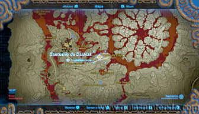
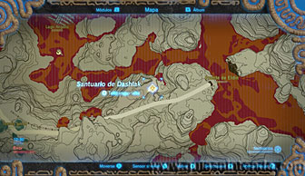
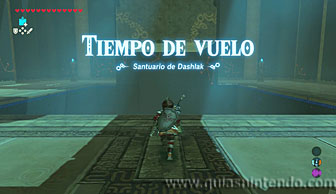
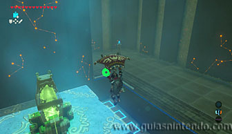
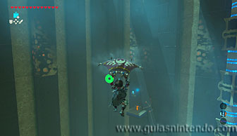
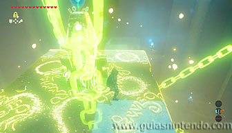
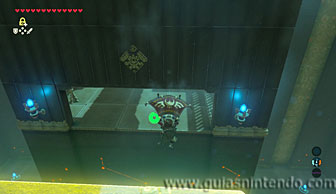
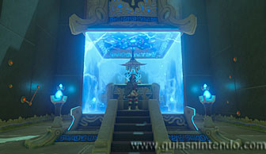

Puedes entrar en este santuario desde que llegas a la región de la torre de Eldin. Lo encuentras antes de llegar al Puente de Eldin, después de pasar por las Termas Goron.

Aquí dentro verás un gran bloque que se eleva cada pocos segundos (impulsado por un suelo móvil) y vuelve a caer en el mismo lugar. Cuando está arriba activa un interruptor que abre la puerta de salida, aunque solo durante un segundo.

Lo primero que debes hacer es subir al gran bloque, dejando que el suelo te impulse hacia arriba igual que a él. Usa la paravela para frenar tu caída y posarte sobre él. Desde ahí encima, si miras atrás verás un cofre a lo lejos. Puedes llegar planeando hasta él si saltas desde el bloque cuando este se encuentre arriba del todo. Conseguirás una Rupia plateada.

Regresa encima del bloque y ahora espera a que se active el interruptor cuando el bloque está arriba del todo. Justo en ese momento debes paralizar el bloque para que no caiga. Si lo haces bien, la puerta de entrada al altar permanecerá abierta mientras el bloque esté paralizado. Aprovecha para saltar y planear a la entrada.

Cuando llegues al altar podrás examinarlo para obtener un símbolo de valía.
